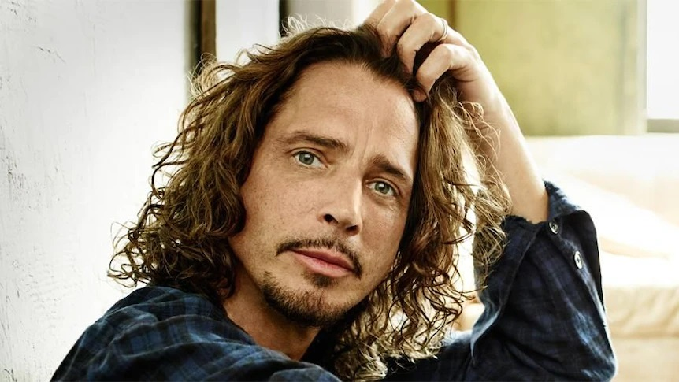

About Chris Cornell

Christopher John Boyle Cornell, más conocido como Chris Cornell, fue un cantante y guitarrista estadounidense que adquirió fama por ser el vocalista de Soundgarden, Audioslave y Temple of the Dog.Comenzó su carrera como baterista antes de convertirse en guitarrista y cantante. Según la revista Hit Parade, ocupa el 4.º puesto de las mejores voces de la historia del hard rock. Una encuesta del sitio web de la revista Rolling Stone lo sitúa en el 9.º puesto de los mejores cantantes de la Historia, y según Planet rock ocupa el 22.º puesto de lista de las 40 mejores voces del rock.